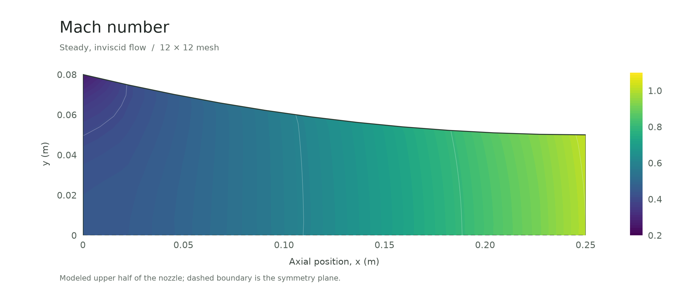
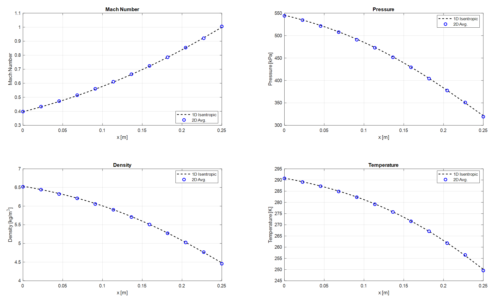
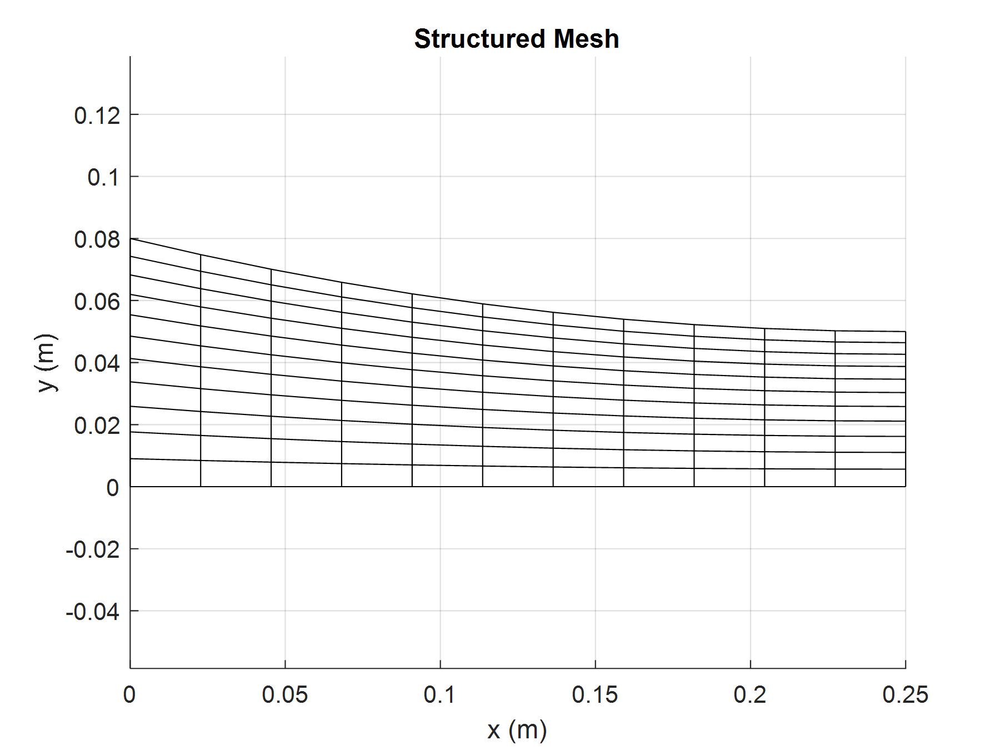

Computational fluid dynamics
Compressible nozzle flow
A custom MATLAB solver for two-dimensional compressible flow.
- Timeline
- Apr — May 2026
- Context
- Computational project
- Tools & methods
Team: Jacob Cockerill

Overview
For my computational fluid dynamics course, I developed a finite-volume solver in MATLAB for steady, inviscid compressible flow through a converging nozzle. I built the structured skewed mesh, formulated the numerical model and boundary conditions, and compared the results with a quasi-one-dimensional isentropic reference solution.
Building the solver
The model solves conservation of mass, momentum, and energy with the ideal-gas relation. A structured mesh follows the nozzle geometry, with uniform spacing along the nozzle and nonuniform spacing across it. The domain uses inflow, outflow, slip-wall, and symmetry boundaries.
Mesh refinement
I examined 8 × 8, 10 × 10, and 12 × 12 meshes to assess how the solution changed with refinement. The skewed cells follow the converging wall while preserving a structured arrangement for the finite-volume formulation.
Comparison with quasi-1D theory
The cross-section volume averages reproduced the overall trends predicted by the isentropic reference: Mach number increases through the nozzle, while pressure, density, and temperature decrease. The differences below describe the averaged quantities, not a pointwise error bound for the full two-dimensional field.
| Quantity | Maximum | Mean |
|---|---|---|
| Mach number | 0.840% | 0.389% |
| Pressure | 0.934% | 0.238% |
| Density | 0.670% | 0.178% |
| Temperature | 0.273% | 0.064% |
What I learned
Skewed meshes made the formulation and implementation more demanding than I initially expected. More work on the model before coding would have reduced debugging and rewrites. I also learned to investigate slow or stalled solver runs early instead of losing time to repeated failed runs.
Scope and next steps
The current formulation is steady and inviscid. Future work would add viscous, heat-transfer, and unsteady terms, improve computational performance, and further examine the limits of quasi-one-dimensional theory.
Project details

